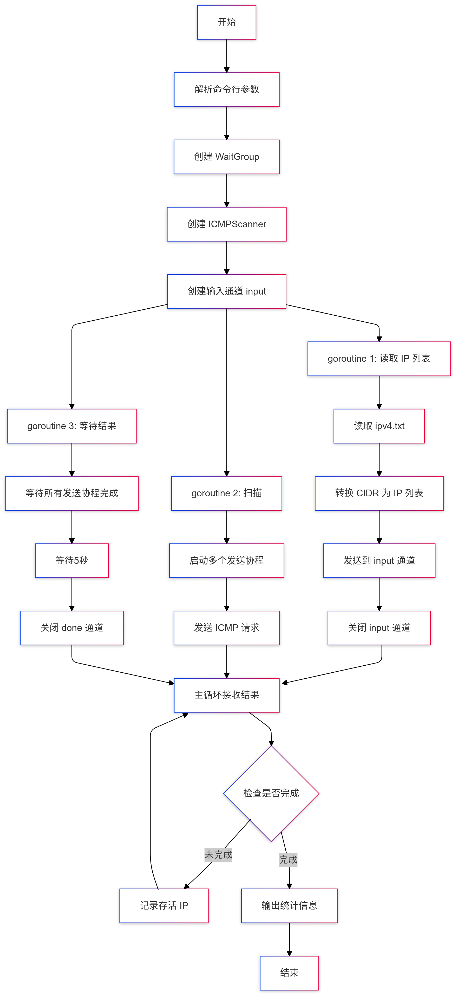

自从加入百度负责物理网络的监控业务之后，我大部分的都是编写各种各样额度底层的网络程序。业余时间我也是编写一些有趣的网络程序，不仅仅是兴趣，也是为未来的某个业务探索一下技术方案。
而且这次，我想知道，就在我这一个10年前的小mini机器4核机器上，在家庭网络中扫描全国(中国大陆)的所有的公网IP地址需要多少时间。
利用它，我可以知道和全国各省市的运营商、云服务商的联通情况。有没有运营商的出口故障以及IP已没有被运营商或者有关部门劫持。
TL;DR: 一共扫描了3亿个地址(343142912)，当前ping的通的IP 592万个(5923768)，耗时1小时(1h2m57.973755197s)。
这次我重构了以前的一个扫描公网IP的程序。先前的程序使用gopacket收发包，也使用gopacket组装包。但是gopacket很讨厌的的一个地方是它依赖libpcap库，没有办法在禁用CGO的情况下。
事实上利用Go的扩展包icmp和ipv4,我们完全可以不使用gopacket实现这个功能，本文介绍具体的实现。
程序的全部代码在：https://github.com/smallnest/fishfinder
程序的主要架构
程序使用ICMP协议进行探测。
首先它启动一个goroutine解析全国的IP地址。IP地址文件每一行都是一个网段，它对每一个网段解析成一组IP地址，把这组IP地址扔进input channel。
一个发送goroutine从input通道中接收IP地址，然后组装成ICMP echo包发送给每一个IP地址，它只负责发送，发送完所有的地址就返回。
一个接收goroutine处理接收到的ICMP reply 回包，并将结果写入到output channel中。
主程序不断的从output中接收已经有回包的IP并打印到日志中，直到所有的IP都处理完就退出。

这里涉及到并发编程的问题，几个goroutine怎么协调：
- IP解析和任务分发goroutine和发送goroutine通过input通讯。分发goroutine处理完所有的IP后，就会关闭input通知发送goroutine。
- 发送goroutine得知input关闭，就知道已经处理完所有的IP,发送完最后的IP后把output关闭。
- 接收goroutine往output发送接收到回包的IP, 如果output关闭，再往output发送就会panic,程序中捕获了panic。不过还没到这一步主程序应该就退出了。
- 主程序从output读取IP, 一旦output关闭，主程序就打印统计信息后推出。
如果你对Go并发编程有疑问，可以阅读极客时间上的《Go并发编程实战课》专栏，或者图书《深入理解Go并发编程》。
如果你是Rust程序员，不就我会推出《Go并发编程实战课》姊妹专栏，专门介绍Rust并发编程。
如果你对网络编程感兴趣，今年我还想推出《深入理解网络编程》的专栏或者图书，如果你感兴趣，欢迎和我探讨。
主程序的代码如下：
1 2 3 4 5 6 7 8 9 10 11 12 13 14 15 16 17 18 19 20 21 22 23 24 25 26 27 28 29 30 31 32 33 34 35 36 37 38 39 40 41 42 43 44 45 46 47 48 49 50
| package main import ( "flag" "time" "github.com/kataras/golog" ) var ( protocol = flag.String("p", "icmp", "The protocol to use (icmp, tcp or udp)") ) func main() { flag.Parse() input := make(chan []string, 1024) output := make(chan string, 1024) scanner := NewICMPScanner(input, output) var total int var alive int golog.Infof("start scanning") start := time.Now() go func() { lines := readIPList() for _, line := range lines { ips := cidr2IPList(line) input <- ips total += len(ips) } close(input) }() scanner.Scan() for ip := range output { golog.Infof("%s is alive", ip) alive++ } golog.Infof("total: %d, alive: %d, time: %v", total, alive, time.Since(start)) }
|
接下来介绍三个三个主要goroutine的逻辑。
公网IP获取以及任务分发
首先你需要到互联网管理中心下载中国大陆所有的注册的IP网段，这是从亚太互联网络信息中心下载的公网IP信息，实际上可以探测全球的IP,这里以中国大陆的公网IP为例。
通过下面的代码转换成网段信息：
1 2 3
| #!/bin/bash wget -c -O- http://ftp.apnic.net/stats/apnic/delegated-apnic-latest | awk -F '|' '/CN/&&/ipv4/ {print $4 "/" 32-log($5)/log(2)}' | cat > ipv4.txt
|
ipv4.txt文件中是一行行的网段：
1 2 3 4 5 6 7 8
| 1.0.1.0/24 1.0.2.0/23 1.0.8.0/21 1.0.32.0/19 1.1.0.0/24 1.1.2.0/23 1.1.4.0/22 ...
|
数据量不大，我们全读取进来(如果太多的话我们就流式读取了)。
解析每一行的网段，转换成IP地址列表，然后发送给input通道。
等处理完就把inpout通道关闭。
1 2 3 4 5 6 7 8 9
| go func() { lines := readIPList() for _, line := range lines { ips := cidr2IPList(line) input <- ips total += len(ips) } close(input) }()
|
发送逻辑
我使用了ICMPScanner结构体来管理发送和接收的逻辑。看名字你也可以猜测到我们将来还可以使用TCP/UDP等协议进行探测。
1 2 3 4 5 6 7 8 9 10 11 12 13 14 15 16 17 18 19 20 21 22 23 24 25
| type ICMPScanner struct { src net.IP input chan []string output chan string } func NewICMPScanner(input chan []string, output chan string) *ICMPScanner { localIP := getLocalIP() s := &ICMPScanner{ input: input, output: output, src: net.ParseIP(localIP), } return s } func (s *ICMPScanner) Scan() { go s.recv() go s.send(s.input) }
|
send方法负责发送ICMP包，recv方法负责接收ICMP包。
1 2 3 4 5 6 7 8 9 10 11 12 13 14 15 16 17 18 19 20 21 22 23 24 25 26 27
| func (s *ICMPScanner) send(input chan []string) error { defer func() { time.Sleep(5 * time.Second) close(s.output) golog.Infof("send goroutine exit") }() id := os.Getpid() & 0xffff conn, err := icmp.ListenPacket("ip4:icmp", s.src.String()) if err != nil { log.Fatal(err) } defer conn.Close() filter := createEmptyFilter() if assembled, err := bpf.Assemble(filter); err == nil { conn.IPv4PacketConn().SetBPF(assembled) } ... return nil }
|
send方法中，我们首先创建一个ICMP连接，我通过icmp包创建了一个连接，然后设置了一个BPF过滤器，过滤掉我们不关心的包。
这是一个技巧，这个连接我们不关心接收到的包，只关心发送的包，所以我们设置了一个空的过滤器。
这个设计本来是为了将来的性能扩展做准备，可以创建多个连接用来更快的发送。不过目前我们只使用一个连接，所以这个连接其实可以和接收goroutine共享，目前的设计还是发送和接收使用各自的连接。
接下来就是发送的逻辑了，也就是上面省略的部分：
1 2 3 4 5 6 7 8 9 10 11 12 13 14 15 16 17 18 19 20 21 22 23 24 25 26 27 28 29 30 31
| seq := uint16(0) for ips := range input { for _, ip := range ips { dst, err := net.ResolveIPAddr("ip", ip) if err != nil { golog.Fatalf("failed to resolve IP address: %v", err) } msg := &icmp.Message{ Type: ipv4.ICMPTypeEcho, Code: 0, Body: &icmp.Echo{ ID: id, Seq: int(seq), Data: []byte("Hello, are you there!"), }, } msgBytes, err := msg.Marshal(nil) if err != nil { golog.Errorf("failed to marshal ICMP message: %v", err) } _, err = conn.WriteTo(msgBytes, dst) if err != nil { golog.Errorf("failed to send ICMP message: %v", err) } seq++ } }
|
发送循环从input通道中读取IP地址，然后构造ICMP echo报文，发送到目标地址。
- 从 input channel 读取 IP 列表
- 对每个 IP 执行以下操作：
- 解析 IP 地址
- 构造 ICMP echo 请求报文
- 序列化报文
- 发送到目标地址
icmp报文中的ID我们设置为进程的PID，在接收的时候可以用来判断是否是我们发送的回包。
接收逻辑
接收逻辑比较简单，我们只需要接收ICMP回包，然后解析出IP地址，然后发送到output通道。
首先我们创建一个ICMP连接，然后循环接收ICMP回包，解析出IP地址，然后发送到output通道。
我们只需处理ICMPTypeEchoReply类型的回包，然后判断ID是否是我们发送的ID，如果是就把对端的IP发送到output通道。
我们通过ID判断回包针对我们的场景就足够了，不用再判断seq甚至payload信息。
1 2 3 4 5 6 7 8 9 10 11 12 13 14 15 16 17 18 19 20 21 22 23 24 25 26 27 28 29 30 31 32 33 34 35 36 37 38 39 40
| func (s *ICMPScanner) recv() error { defer recover() id := os.Getpid() & 0xffff conn, err := icmp.ListenPacket("ip4:icmp", "0.0.0.0") if err != nil { log.Fatal(err) } defer conn.Close() reply := make([]byte, 1500) for { n, peer, err := conn.ReadFrom(reply) if err != nil { log.Fatal(err) } msg, err := icmp.ParseMessage(protocolICMP, reply[:n]) if err != nil { golog.Errorf("failed to parse ICMP message: %v", err) continue } switch msg.Type { case ipv4.ICMPTypeEchoReply: echoReply, ok := msg.Body.(*icmp.Echo) if !ok { continue } if echoReply.ID == id { s.output <- peer.String() } } } }
|
可以看到，200行代码基本就可以我们扫描全国公网IP的程序了。你也可以尝试扫描一下全球的IP地址，看看需要多少时间。
对了，下面是我运行这个程序的输出:
1 2 3 4 5
| ... [INFO] 2025/01/26 22:01 223.255.236.221 is alive [INFO] 2025/01/26 22:01 223.255.252.9 is alive [INFO] 2025/01/26 22:01 send goroutine exit [INFO] 2025/01/26 22:01 total: 343142912, alive: 5923768, time: 1h2m57.973755197s
|